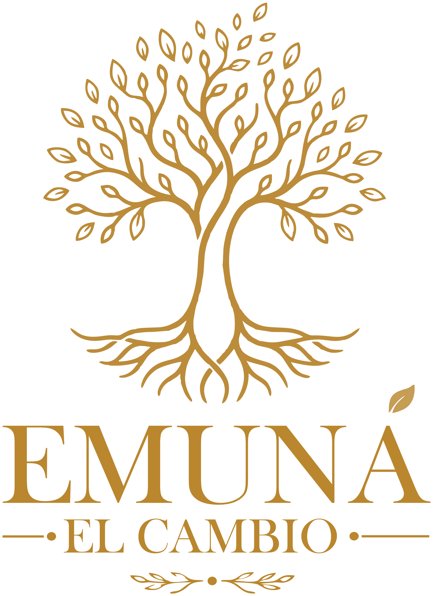

Un duelo, una decisión que no llega, un cambio de trabajo, la sensación de estar en el lugar equivocado. El counseling es un espacio profesional de escucha para atravesar eso con alguien al lado.
Adolescentes desde 16 años y adultos · Argentina y exterior
Elegís día y horario entre los disponibles y recibís la confirmación por mail con el enlace de la videollamada. Te lleva menos de dos minutos.
Ver horarios disponiblesContale a Sabrina en qué momento estás y resolvé tus dudas antes de reservar. Responde personalmente, en el día o al día siguiente.
Abrir WhatsAppLos horarios se muestran en tu zona horaria. Si estás fuera de Argentina, la agenda lo ajusta sola.
Elegís día y horario. Recibís un mail de confirmación con el enlace de la videollamada.
Contás lo que te está pasando. Sabrina escucha, pregunta y entre los dos ordenan qué se puede trabajar.
Es una disciplina del acompañamiento centrada en la persona. Su punto de partida es que nadie conoce tu vida mejor que vos, y que muchas veces lo que hace falta es tener dónde ordenarla en voz alta, con alguien que escuche con atención.
El foco está en lo que estás atravesando ahora y en qué querés hacer con eso.
La idea es que salgas del proceso con herramientas propias que puedas seguir usando.
Acompaña las dificultades propias del vivir. Cuando una consulta necesita un abordaje clínico, se conversa y se deriva a un profesional de la psicología.

Soy Counselor, Psicóloga Social y una apasionada del desarrollo humano. Acompaño a personas que atraviesan momentos de cambio, incertidumbre o dificultades cotidianas, en un espacio profesional de escucha donde puedan fortalecer sus propios recursos y construir herramientas para vivir con mayor bienestar y claridad.
Creo profundamente que no existen fórmulas mágicas ni respuestas prefabricadas. Cada persona tiene su historia, sus tiempos y su manera de transitar los desafíos de la vida. Por eso cada proceso de counseling es único y se construye de forma personalizada.
Clr. Sabrina Ricci Pérez
En Argentina se lo conoce también como consultoría psicológica o desarrollo humano. Acompaña dificultades propias del vivir —cambios, decisiones, pérdidas, crisis— trabajando sobre el presente y sobre tus propios recursos. Cuando una consulta necesita un abordaje clínico, se conversa y se deriva a un profesional de la psicología.
Depende de lo que estés atravesando y de qué quieras trabajar. Hay consultas puntuales que se resuelven en pocos encuentros y procesos que llevan varios meses. Es algo que se revisa a lo largo del camino, nunca una condición fijada de antemano.
Sí. Desde el mismo mail de confirmación podés reprogramar o cancelar. Con 24hs de anticipación
Sí. Todo lo que se habla queda entre vos y Sabrina, durante el proceso y después de que termine. La confidencialidad es parte del encuadre profesional del counseling.
Son por videollamada y de una hora. La frecuencia se acuerda en el primer encuentro. Solo necesitás conexión y un lugar donde puedas hablar con tranquilidad.
Un encuentro por videollamada para empezar a ordenar lo que estás atravesando.